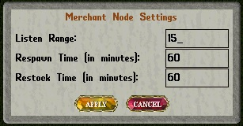

To install a merchant node, you must know the following information before you begin:
Largest radius of the room to monitor. This can be determined by standing in the exact center of the room and counting the tiles to the furthest wall. Keep in mind that the nodes check line of sight. So for buildings that are not rectangular, you must base your centering on the assumption that the building is rectangular. Once you have your radius, you must create your NPCs.
Note that merchant NPCs are designed to be permanent and should not be created by the .createnpc command or a spawn point. Use the .createnode command to begin setting up the node.
The Create Node gump:

The createnode gump is pretty straight forward.
The "Listen Range" field is the radius around the node that it will respond to speech commands.The default distance is 15
The "Respawn Time" field is the amount of time between respawning a merchant or banker should the NPC be killed. The default time is 60 minutes.
The "Restock Time" field is the time between vendors being restocked. Each NPC will restock their inventory on that interval. The default time is 60 minutes.
Once all the relevant information is entered, click the "APPLY" button.
You will get a target cursor. This is for placing the node. Place the node at the center of the room, even if it is within a wall or outside the actual building.
Using the node:
Once the node is created, double-click on it and a gump will appear. If you do not see the node, use the .info command and target yourself. Click the blue button next to Pivileges. In the list of privileges click the blue button next to seeinvisitems to enable seeing invisible items.
Before we look at the gump in detail, let's spawn your first merchant. There is a button at the bottom of the gump, next to the CANCEL button, labelled "Add Merchant". Click on that to create a merchant. The gump will disappear and you will be asked to enter the type of merchant you wish to spawn. Enter alchemist and press <enter>. You will receive a target cursor. Choose where you wish the merchant to appear. The node will spawn the merchant at that location and the gump will reappear momentarily.
There are occasions when you might want more than one merchant in a shop or location. So to place another merchant, repeat the procedure above.
The Merchant Node "use" gump:

This is an example of a merchant node gump. At the top left, next to the label "Current", you see the number of enabled merchants on the left side of the slash and the total number of merchants created by this node on the right. In this case three enabled of three created. The node has been used to spawn three merchants, a tailor, a mage, and an alchemist. You can see it shows the merchant type and its location.
Near the bottom left side of the gump, above the APPLY button is the "Node Enabled" button. This allows you to enable or disable a node. Clicking this button, if the node is enabled, will disable the node and remove merchants attached to the node from the world. When a node is disabled it will be colored a dark green and the text next to the button will display "Node Disabled" in red. Clicking the button on the gump for a disabled node will enable it and respawn the merchants.
On the right side of the gump, in the white area, are two buttons. The "Restock Merchants" button will resupply all merchants attached to the node with their inventory to sell. The respawn merchants button will respawn any merchants that might have been killed by players This can be useful during quests.
On the bottom of the gump, near the middle is the node settings button. This will open the node settings gump you saw when you used the .createnode gump. Please note that if you open the node settings and modify the listen range, the new setting will not take effect until the server is restarted. This is a POL system limitation.
Now let's take a look at the check-boxes and buttons that affect individual merchants.
There are two check boxes next to each merchant listed, "Enabled" and "Restock". Merchants are automatically enabled when you add them. This means they are placed in the world, have their wares ready to sell, and will respond to speech commands. If the merchant is enabled the Enabled check box will have a check mark. To disable a merchant click on the check box and click the APPLY button in the lower left. Disabling a merchant will remove it from the game world but not from the node.This can be useful when you wish to setup nodes with certain merchants that are only available at certain times such as during quests. The Restock check-box will refresh a vendor's stock of goods to sell to players. To restock a vendor, click on the check-box and click APPLY. As these are check-boxes, you can select a check-box for multiple merchants.
There are two buttons to the right of the check-boxes "Delete" and "Customize". Clicking the Delete button will delete that merchant from the world, and the node. To delete a merchant, click the Delete button. The merchant will be deleted immediately. This operation cannot be undone.
The button to the far right of a merchant is the Customize button. This is a new feature in the merchant node system. It allows the customization of certain characteristics of a merchant.
The Customize gump:

In this gump you can assign a static name to this vendor. The vendor will retain this name even if it is killed and respawns. You can also choose whether you want to have this vendor spawn as a male, female or a random gender You can also choose whether this vendor will respawn with a random skin hue and a random speech color. Keep in mind, if you do assign a static name to the merchant, do not forget to assign a static gender appropriate for the name. Click the OK button when you are done or the X to cancel.